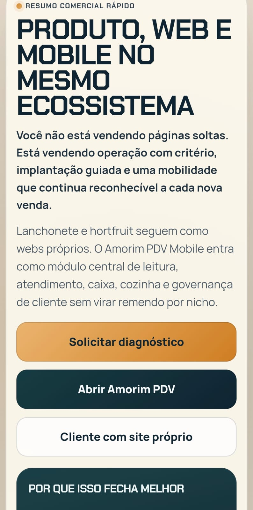
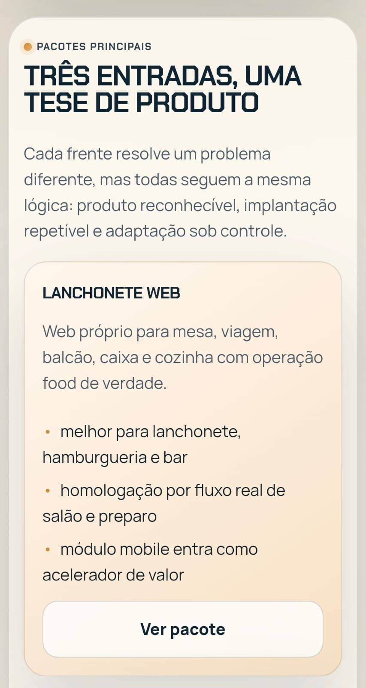
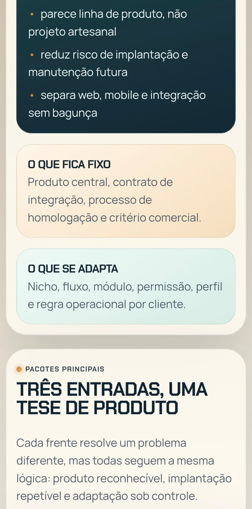

PRODUTO, WEB E MOBILE NO MESMO ECOSSISTEMA
Você não está vendendo páginas soltas. Está vendendo operação com critério, implantação guiada e mobilidade reconhecível.
Lanchonete e hortfruit seguem como webs próprios. O Amorim PDV Mobile entra como módulo central de leitura, atendimento, caixa, cozinha e governança de cliente.
Por que isso fecha melhor
- parece linha de produto, não projeto artesanal
- reduz risco de implantação e manutenção futura
- separa web, mobile e integração sem bagunça
O que fica fixo
Produto central, contrato de integração, processo de homologação e critério comercial.
Pacotes principais
- Lanchonete Web para mesa, viagem, balcão, caixa e cozinha
- Hortfruit Web para leitura, catálogo, carrinho e checkout
- Amorim PDV Mobile como módulo central e adaptável
Método de entrega
- diagnóstico e enquadramento no pacote certo
- condição comercial clara com cupom ou dias livres
- implantação guiada, homologação e go-live
Visão geral do ecossistema
A leitura principal mostra a tese comercial inteira: produto, implantação guiada e mobilidade integrada no mesmo sistema.

Provas que sustentam a proposta
As imagens complementares mostram como a linha de produto se organiza em pacotes claros e método de entrega previsível.

